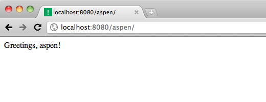
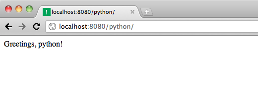
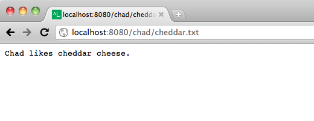
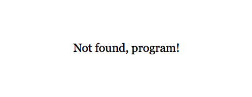
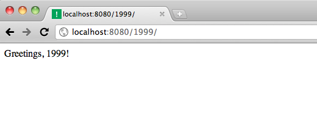
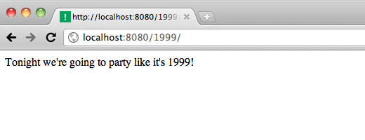

Aspen supports dynamic URLs using virtual paths, which are specially-named directories and files on your filesystem.
Make a directory on your filesystem called %name.
$ mkdir %name
Then make an index.html simplate in
there with this content:
Greetings, {{ request.path['name'] }}!
Now hit http://localhost:8080/aspen/. You should see this:
Now hit http://localhost:8080/python/. You should see:
Get it?
Aspen will also match files that start with a percent sign (%).
Make a simplate in %name named %cheese.txt, with this
content:
{{ request.path['name'].title() }} likes {{ request.path['cheese'] }} cheese.
Now test it out:
Virtual path files only work for the last URL path part, so if you hit /chad/cheddar.txt/ (with a trailing slash), you’ll get a 404:
By default, path parts are decoded to Python unicode objects using ASCII.
You can also typecast path parts to integers. Make a directory called %year.int (for files, put the cast
before the file extension, like %month.int.html).
$ mkdir "%year.int"
Then put an index.html in there with this content:
Tonight we're going to party like it's {{ request.path['year'] }}!
Now hit http://localhost:8080/1999/. What do you get?
Wait ... where's the party?
You can only have one variable directory per level. If you have more than one, the case-insensitive alphabetically first is used. Get it?
Remove the %name directory:
$ rm -rf %name
Now refresh, and you should see:
That’s better. Yay filesystem!
{% end %}{kind=link}
{kind=link}
{kind=link}
{kind=link}
{kind=link}
{kind=link}